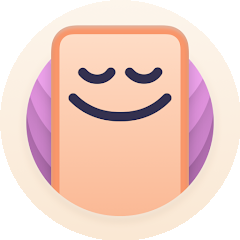
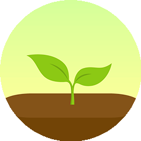
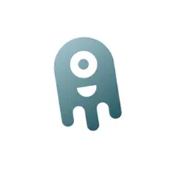

Use aplicativos para combater o vício.
Por mais que possa soar estranho, pois o objetivo aqui é diminuir o uso das telas, é possível sim usar aplicativos dentro dos aparelhos que vão te ajudar a focar, organizar e lutar contra esse vício,para isso, montamos uma lista de aplicativos e funções nos aparelhos que irão te ajudar, com uma breve descrição e onde você pode encontrá-los!

- AppBlock
- OffScreen
- Forest
- Space
- Freedom
- Modo de Foco
O App bloqueia temporariamente aplicativos, sites e notificações com base em horário, localização e conexão. Permite definir limites diários de uso. O App está disponível para iPhone (iOS) e Android.
O App monitora o tempo de tela, oferece desafios de detox digital e modo de foco Pomodoro. Ajuda a entender e melhorar o uso do celular. O App está disponível para iPhone (iOS) e Android.
O App usa um sistema de recompensas com árvores virtuais para manter o foco. Sons ambientes e compartilhamento de progresso estimulam a produtividade. O App está disponível para iPhone (iOS) e Android.
O App oferece metas com recompensas em forma de galáxias virtuais. Inclui análise de uso por 60 dias, bloqueio de notificações e dicas para redução do tempo de tela. O App está disponível para iPhone (iOS) e Android.
O App bloqueia sites e apps conforme horários definidos. Com o “Modo Bloqueado”, ajuda a evitar distrações e aumentar a produtividade em estudos e trabalho. O App está disponível para iPhone (iOS) e Android
Função integrada aos celulares que permite bloquear notificações e apps temporariamente, promovendo
concentração e controle de
distrações. O Modo de foco é uma função original de celulares como Android e
iPhone(iOS).